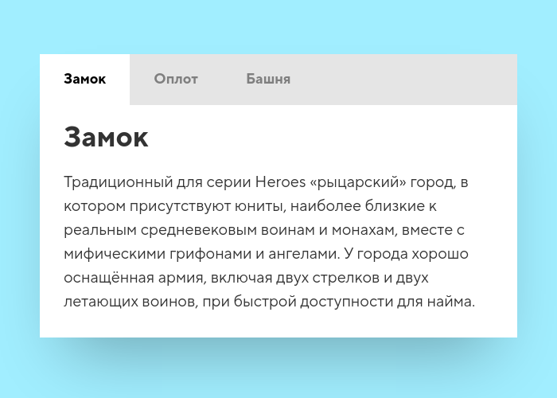
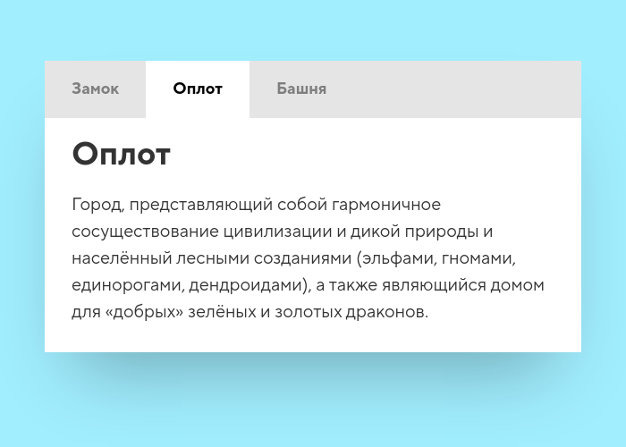
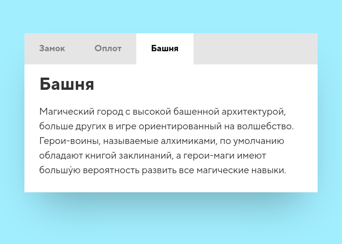
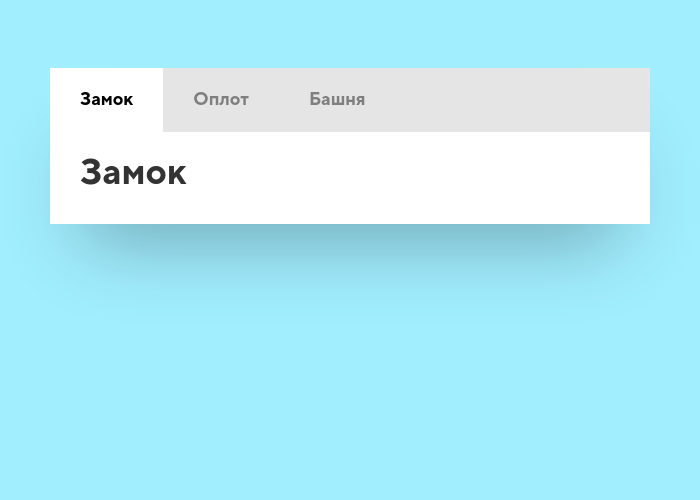
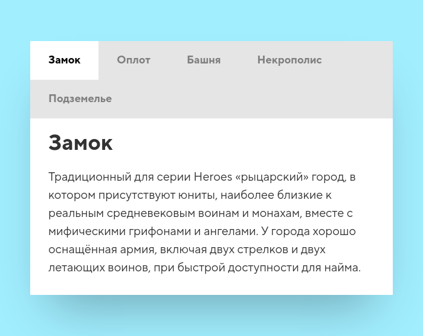
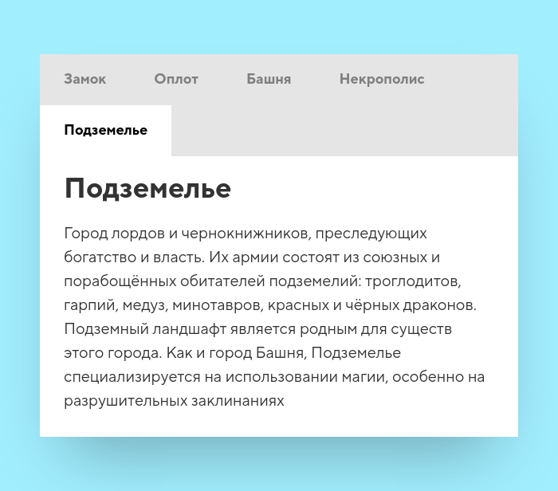

Традиционный для серии Heroes «рыцарский» город, в котором присутствуют юниты, наиболее близкие к реальным средневековым воинам и монахам, вместе с мифическими грифонами и ангелами. У города хорошо оснащённая армия, включая двух стрелков и двух летающих воинов, при быстрой доступности для найма.
Город, представляющий собой гармоничное сосуществование цивилизации и дикой природы и населённый лесными созданиями (эльфами, гномами, единорогами, дендроидами), а также являющийся домом для «добрых» зелёных и золотых драконов.
Магический город с высокой башенной архитектурой, больше других в игре ориентированный на волшебство. Герои-воины, называемые алхимиками, по умолчанию обладают книгой заклинаний, а герои-маги имеют большу́ю вероятность развить все магические навыки.
maket Кейс 1. Исходное состояние, вьюпорт 700px
Кейс 2. Класс "tab-title--open" на втором табе, вьюпорт 700px
Кейс 3. Класс "tab-title--open" на третьем табе, вьюпорт 700px
Кейс 4. Недополнение первом "tab-content", вьюпорт 700px
Кейс 5. Добавлено ещё два таба, вьюпорт 700px
Кейс 6. Добавлено ещё два таба, класс "tab-title--open" на пятом табе, вьюпорт 700px

Табы
Уровень сложности: мидл
Категория: HTML и CSS / Готовые компоненты
Доработайте исходную вёрстку, чтобы внешний вид вашей вёрстки совпадал с эталонным решением в разных условиях.
Правила и подсказки:
Разметку в index.html изменять нельзя
Размеры и отступы кратны 5 пикселям
Подготовьте такие стили, чтобы таб «открывался» при добавлении класса tab-title--open на tab-title
Писать скрипт для оживления табов не нужно
Сценарии тестирования:
Все сценарии проверяются на ширине вьюпорта 700px
Исходное состояние
Класс tab-title--open на втором .tab-title
Класс tab-title--open на третьем .tab-title
Недополнение в первом .tab-content
Добавлено ещё два таба
Добавлено ещё два таба, класс tab-title--open на пятом табе
@font-face {
font-weight: 400;
font-family: "TT Norms Pro";
font-style: normal;
font-display: swap;
src: url(fonts/tt-norms-pro-400-normal.woff2)format("woff2");
}
@font-face {
font-weight: 700;
font-family: "TT Norms Pro";
font-style: normal;
font-display: swap;
src: url(fonts/tt-norms-pro-700-normal.woff2)format("woff2");
}
* {
box-sizing: border-box;
}
body {
padding: 60px 10px;
font-family: 'TT Norms Pro', sans-serif;
font-weight: 400;
color: #333;
background: #A1EEFF;
}
h1 {
margin: 0;
font-family: 'TT Norms Pro', sans-serif;
font-weight: 700;
font-size: 36px;
line-height: 42px;
}
p {
margin-top: 20px;
margin-bottom: 0;
font-size: 20px;
line-height: 30px;
}
.tabs {
background: #e5e5e5;
box-shadow: 0 48px 80px -32px rgba(0,0,0,0.3);
}
.tab-title {
font-size: 18px;
line-height: 24px;
font-weight: bold;
color: #7f7f7f;
background: #e5e5e5;
cursor: pointer;
}
.tab-title:hover {
background: #d8d8d8;
}
.tab-title:active {
background: #ccc;
}
.tab-title--open {
background: #fff;
color: #000;
}
.tab-content {
background: #fff;
}
На главную